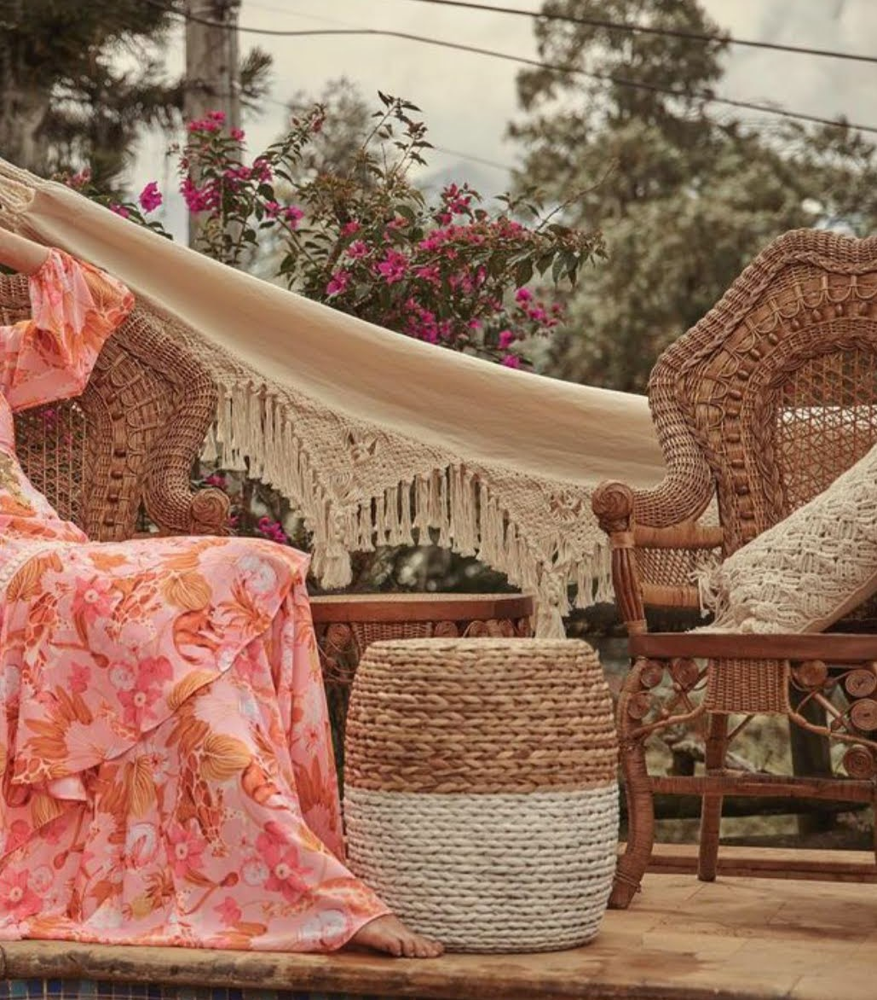
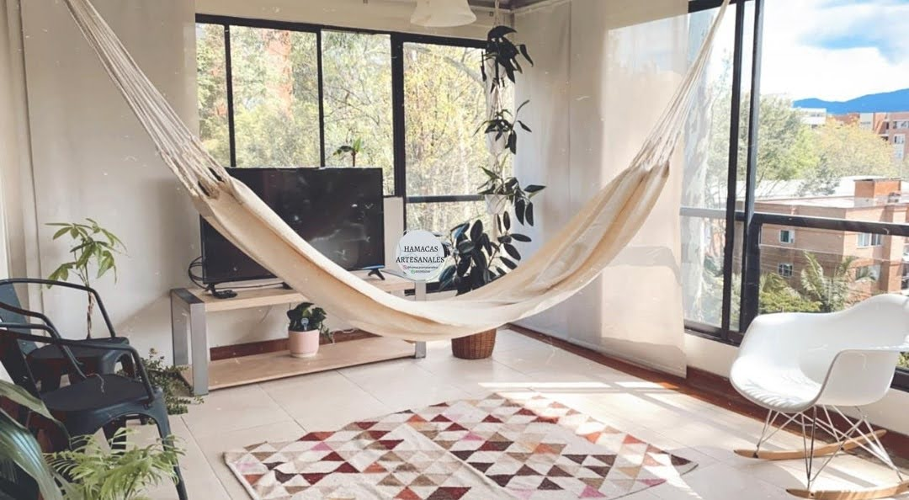
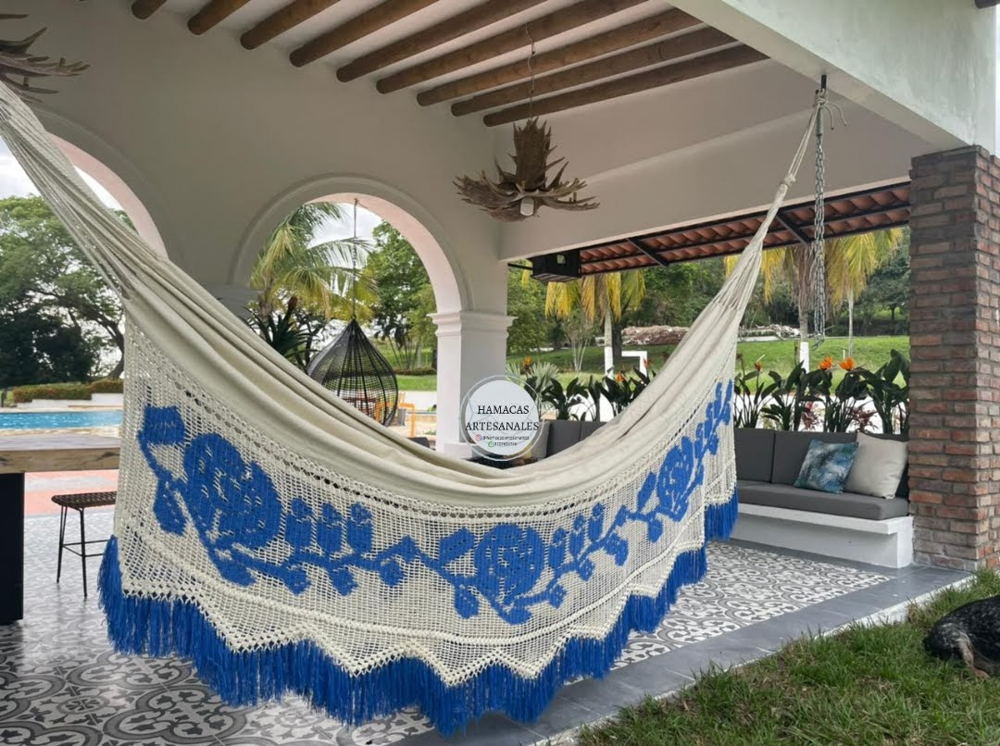
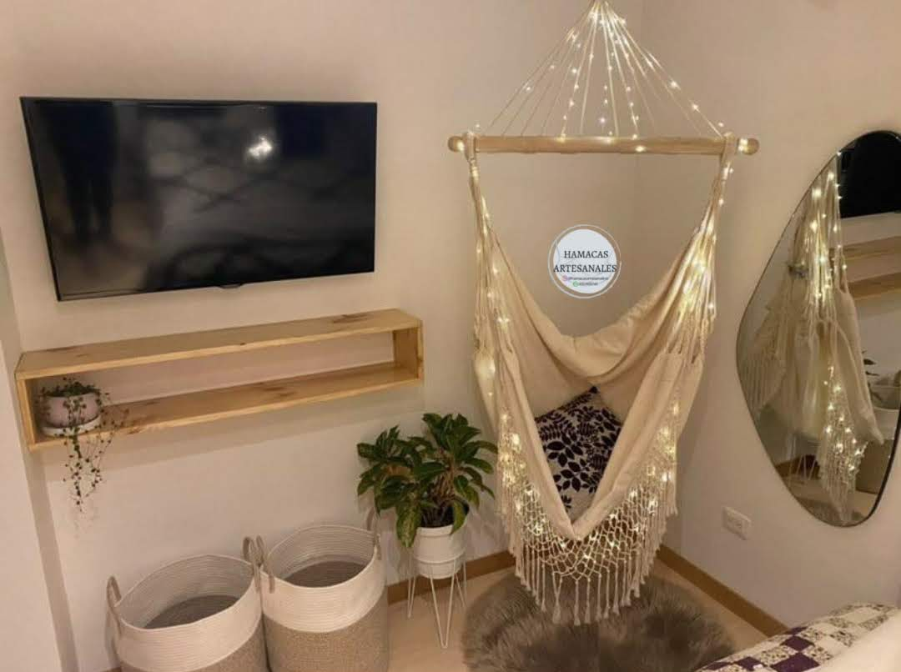

Artesanías Colombianas de alta calidad.

- 
-

- 
- 
- 
Hamacas artesanales lleva consigo una tradición, con nosotros encuentras piezas tejidas con hilos extrafinos de algodón, los cuales se unen a través del telar manual y este cumple su función por medio del cuerpo humano usado como motor, pero eso no es todo también contamos con piezas que son tejidas únicamente con las manos de los mejores artesanos.
Nuestras hamacas son transpirables, suaves y totalmente cómodas. Piezas que se vuelven fundamentales para tu hogar y gracias a los hermosos diseños que se manejan puedes llevar un toque de armonía a tu espacio. Como plus nuestras hamacas también se pueden personalizar para que se adecuen no solo a tu necesidad sino a tu personalidad.
Hamacas artesanales lleva consigo una tradición, con nosotros encuentras piezas tejidas con hilos extrafinos de algodón, los cuales se unen a través del telar manual y este cumple su función por medio del cuerpo humano usado como motor, pero eso no es todo también contamos con piezas que son tejidas únicamente con las manos de los mejores artesanos